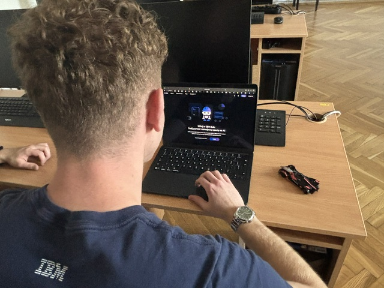
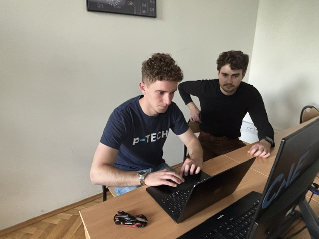
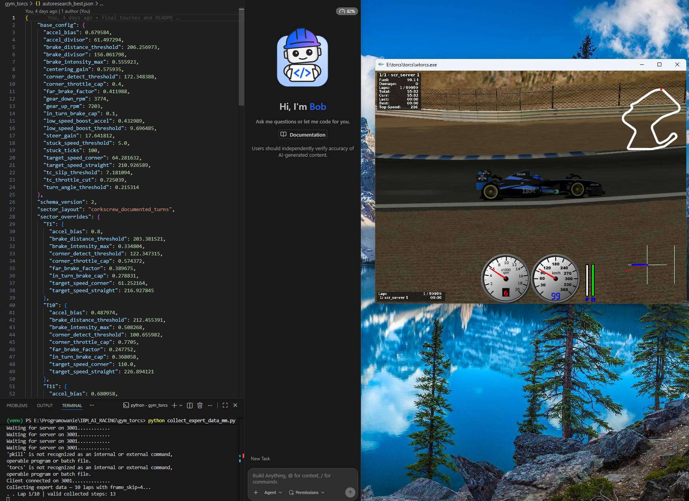
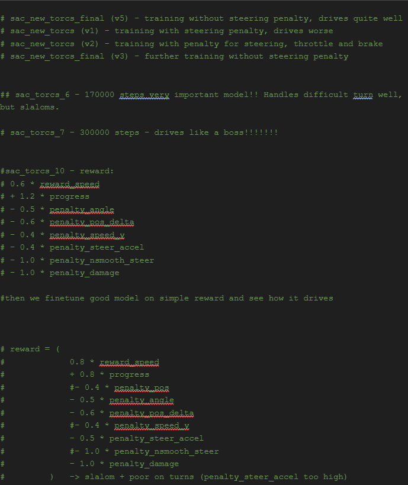
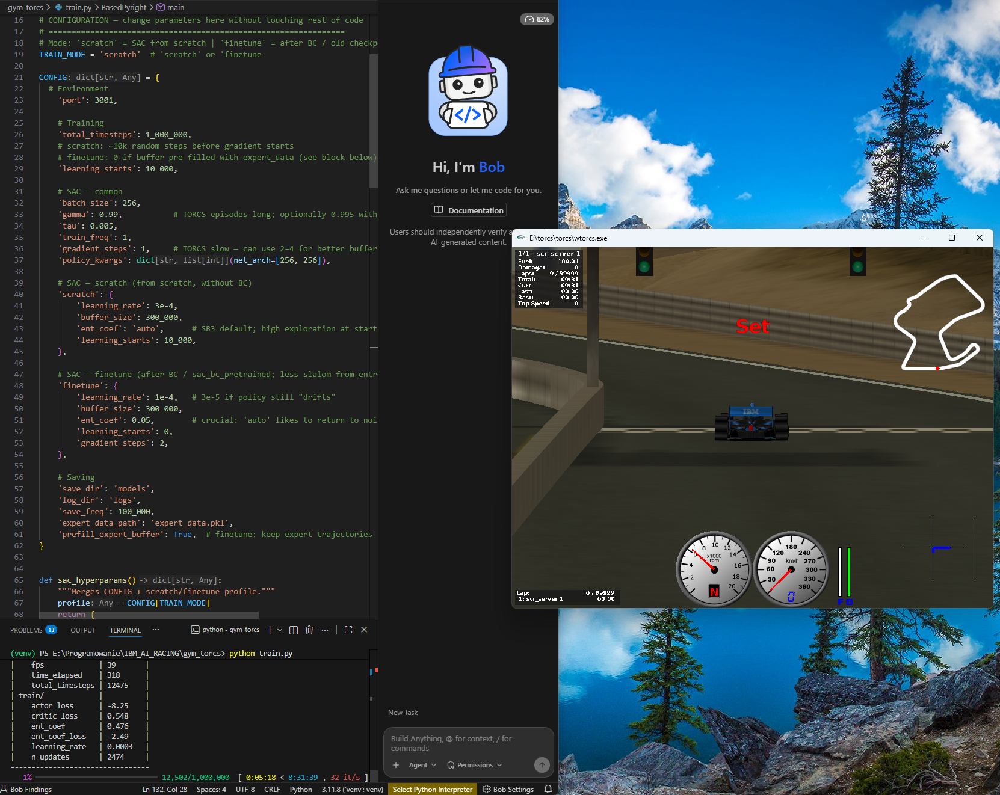

IBM AI Racing League - Autonomous Vehicle Intelligence Project
We are a community of passionate students from the AI Lab science club at AGH. Together, we tackle complex, real-world problems by pushing the boundaries of Machine Learning, Artificial Intelligence, and Quantum Computing.
The first phase of our project involved comprehensive research. We completed multiple IBM SkillsBuild courses on AI and Machine Learning Algorithms, then began exploring various approaches to autonomous racing.
Our strategy centered on Reinforcement Learning, but we developed parallel solutions including a rule-based model for reliability. We also explored Behavioral Cloning, a supervised learning technique that allowed us to fine-tune models using expert driving data.
Our work was divided into specialized teams:


Our rule-based driver uses predefined parameters such as target speed and center-line correction to control the vehicle. The training process iteratively:
Result: Achieved an impressive lap time of 101.548 seconds on the test track.

We collected driving data from our rule-based model and trained a supervised learning model on this expert behavior. This approach gave us a strong starting point for reinforcement learning, eliminating the exploration burden of starting from random actions.
After behavioral cloning, we trained our RL model using the Soft Actor-Critic (SAC) algorithm. The biggest challenges were fine-tuning both the observation space and the reward function. Through systematic experimentation, we successfully created a driver capable of completing laps autonomously.


Planned enhancements: Train on increasingly complex tracks to improve generalization. We plan to implement a quadratic penalty for steering oscillations relative to vehicle speed, accounting for centripetal acceleration effects. Additional improvements include augmenting the network with LSTM layers for better trajectory planning.
Our approach relied on iteratively balancing the reward function to eliminate pathological agent behaviors. Key issues we addressed:
By systematically observing and addressing these behaviors, we evolved the agent from erratic performance to smooth, stable, and competitive driving.
As AGH students passionate about AI and quantum computing, the IBM AI Racing League presented a perfect opportunity to deepen our knowledge of reinforcement learning in a practical, competitive context.
🙏 Thank you IBM for inspiring us through this competition. It allowed us to expand our technical knowledge while developing crucial soft skills like teamwork and project management.
We're grateful for the comprehensive SkillsBuild courses that taught us the fundamentals of reinforcement learning and diverse approaches to AI. This is just the beginning of our journey with IBM and the AI Racing League!